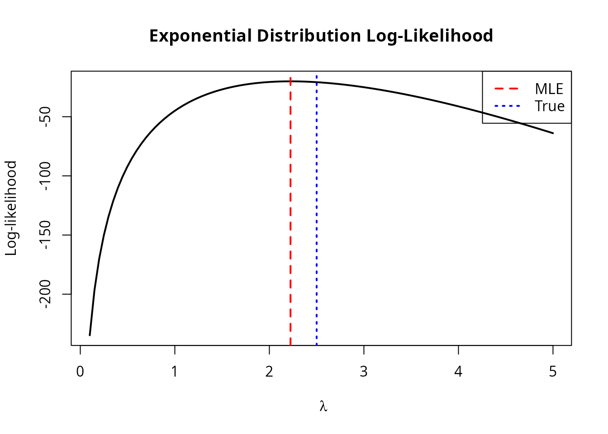
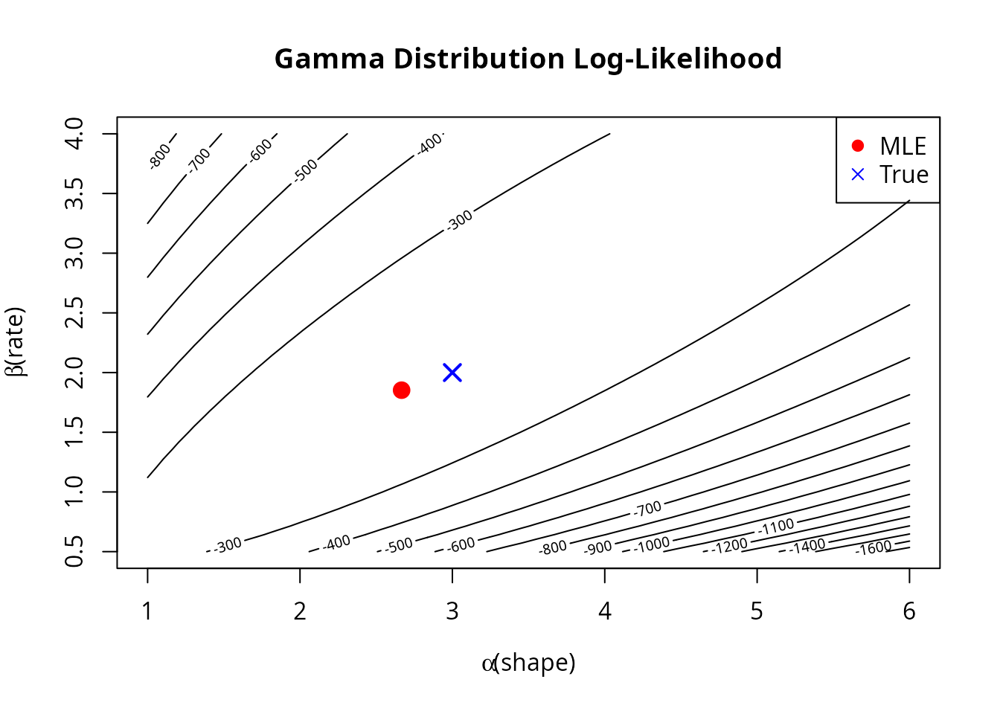
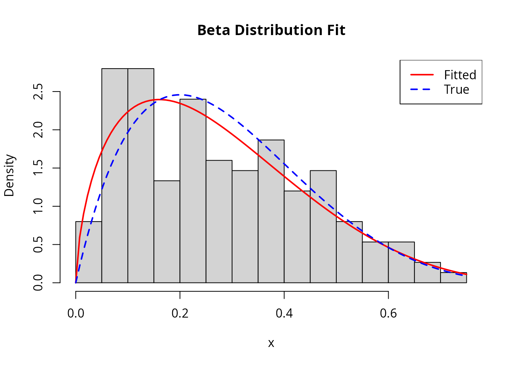
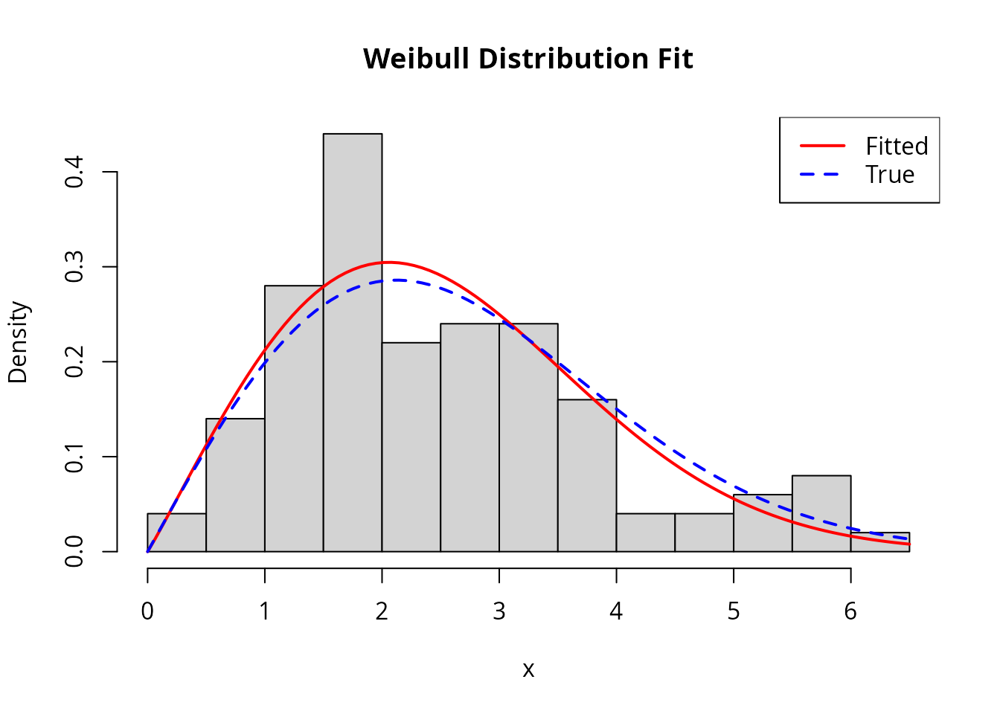
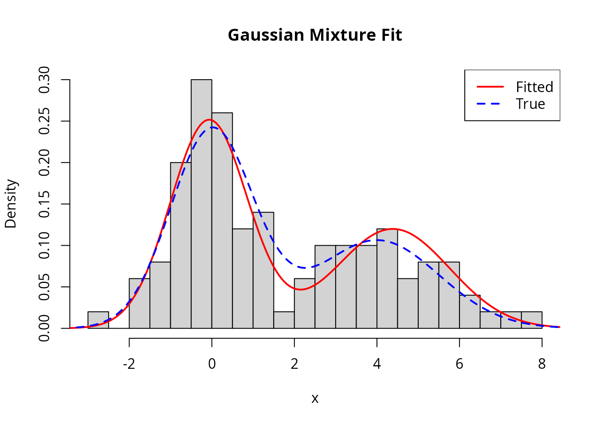

Case Studies: MLE for Common Distributions
Alexander Towell
2025-12-02
Source:vignettes/case-studies.Rmd
case-studies.RmdIntroduction
This vignette demonstrates using numerical.mle to fit
various probability distributions to data. Each case study includes:
- The log-likelihood and score functions
- Appropriate constraints
- Comparison with analytical solutions (where available)
- Practical considerations
Case Study 1: Exponential Distribution
The exponential distribution is useful for modeling waiting times and lifetimes. It has one parameter: rate .
Setup
# Generate data
n <- 100
true_rate <- 2.5
x_exp <- rexp(n, rate = true_rate)
# Log-likelihood: sum of log(lambda * exp(-lambda * x))
loglike_exp <- function(lambda) {
if (lambda <= 0) return(-Inf)
n * log(lambda) - lambda * sum(x_exp)
}
# Score: d/d_lambda of log-likelihood
score_exp <- function(lambda) {
n / lambda - sum(x_exp)
}
# Constraint: lambda must be positive
constraint_exp <- mle_constraint(
support = function(lambda) lambda > 0,
project = function(lambda) max(lambda, 1e-8)
)Fitting
result_exp <- mle_gradient_ascent(
loglike = loglike_exp,
score = score_exp,
theta0 = 1,
config = mle_config_linesearch(max_iter = 50),
constraint = constraint_exp
)
# Compare with analytical MLE: 1/mean(x)
mle_analytical <- 1 / mean(x_exp)
cat("Numerical MLE: ", round(result_exp$theta.hat, 4), "\n")
#> Numerical MLE: 2.2227
cat("Analytical MLE: ", round(mle_analytical, 4), "\n")
#> Analytical MLE: 2.2236
cat("True rate: ", true_rate, "\n")
#> True rate: 2.5
cat("Iterations: ", result_exp$iter, "\n")
#> Iterations: 6Visualization
lambda_grid <- seq(0.1, 5, length.out = 100)
ll_values <- sapply(lambda_grid, loglike_exp)
plot(lambda_grid, ll_values, type = "l", lwd = 2,
xlab = expression(lambda), ylab = "Log-likelihood",
main = "Exponential Distribution Log-Likelihood")
abline(v = result_exp$theta.hat, col = "red", lwd = 2, lty = 2)
abline(v = true_rate, col = "blue", lwd = 2, lty = 3)
legend("topright", c("MLE", "True"), col = c("red", "blue"), lty = c(2, 3), lwd = 2)
Case Study 2: Gamma Distribution
The gamma distribution generalizes the exponential with two parameters: shape and rate .
Setup
# Generate data
true_shape <- 3
true_rate <- 2
x_gamma <- rgamma(200, shape = true_shape, rate = true_rate)
# Log-likelihood
loglike_gamma <- function(theta) {
alpha <- theta[1]
beta <- theta[2]
if (alpha <= 0 || beta <= 0) return(-Inf)
n <- length(x_gamma)
n * (alpha * log(beta) - lgamma(alpha)) +
(alpha - 1) * sum(log(x_gamma)) - beta * sum(x_gamma)
}
# Score function
score_gamma <- function(theta) {
alpha <- theta[1]
beta <- theta[2]
n <- length(x_gamma)
c(
n * (log(beta) - digamma(alpha)) + sum(log(x_gamma)), # d/d_alpha
n * alpha / beta - sum(x_gamma) # d/d_beta
)
}
# Both parameters must be positive
constraint_gamma <- mle_constraint(
support = function(theta) all(theta > 0),
project = function(theta) pmax(theta, 1e-6)
)Fitting with Different Methods
# Gradient ascent
result_ga <- mle_gradient_ascent(
loglike = loglike_gamma,
score = score_gamma,
theta0 = c(1, 1),
config = mle_config_linesearch(max_iter = 200),
constraint = constraint_gamma
)
# Grid search to find better starting point
result_grid <- mle_grid_search(
loglike = loglike_gamma,
lower = c(0.5, 0.5),
upper = c(10, 10),
grid_size = 20
)
# Refine with gradient ascent
result_refined <- mle_gradient_ascent(
loglike = loglike_gamma,
score = score_gamma,
theta0 = result_grid$theta.hat,
config = mle_config_linesearch(max_iter = 100),
constraint = constraint_gamma
)
cat("Direct gradient ascent:\n")
#> Direct gradient ascent:
cat(" Shape:", round(result_ga$theta.hat[1], 4),
" Rate:", round(result_ga$theta.hat[2], 4), "\n")
#> Shape: 2.6637 Rate: 1.8497
cat(" Iterations:", result_ga$iter, "\n\n")
#> Iterations: 38
cat("Grid search + refinement:\n")
#> Grid search + refinement:
cat(" Shape:", round(result_refined$theta.hat[1], 4),
" Rate:", round(result_refined$theta.hat[2], 4), "\n")
#> Shape: 2.6668 Rate: 1.8525
cat(" Iterations:", result_refined$iter, "(after grid)\n\n")
#> Iterations: 60 (after grid)
cat("True parameters:\n")
#> True parameters:
cat(" Shape:", true_shape, " Rate:", true_rate, "\n")
#> Shape: 3 Rate: 2Visualization
# Create contour plot
alpha_grid <- seq(1, 6, length.out = 50)
beta_grid <- seq(0.5, 4, length.out = 50)
ll_gamma <- outer(alpha_grid, beta_grid, function(a, b) {
mapply(function(ai, bi) loglike_gamma(c(ai, bi)), a, b)
})
contour(alpha_grid, beta_grid, ll_gamma, nlevels = 20,
xlab = expression(alpha ~ "(shape)"),
ylab = expression(beta ~ "(rate)"),
main = "Gamma Distribution Log-Likelihood")
points(result_refined$theta.hat[1], result_refined$theta.hat[2],
pch = 19, col = "red", cex = 1.5)
points(true_shape, true_rate, pch = 4, col = "blue", cex = 1.5, lwd = 2)
legend("topright", c("MLE", "True"), pch = c(19, 4), col = c("red", "blue"))
Case Study 3: Beta Distribution
The beta distribution is bounded on and is useful for modeling proportions. It has shape parameters and .
Setup
# Generate data
true_alpha <- 2
true_beta <- 5
x_beta <- rbeta(150, shape1 = true_alpha, shape2 = true_beta)
# Log-likelihood
loglike_beta <- function(theta) {
a <- theta[1]
b <- theta[2]
if (a <= 0 || b <= 0) return(-Inf)
n <- length(x_beta)
n * (lgamma(a + b) - lgamma(a) - lgamma(b)) +
(a - 1) * sum(log(x_beta)) + (b - 1) * sum(log(1 - x_beta))
}
# Score function
score_beta <- function(theta) {
a <- theta[1]
b <- theta[2]
n <- length(x_beta)
psi_ab <- digamma(a + b)
c(
n * (psi_ab - digamma(a)) + sum(log(x_beta)), # d/d_alpha
n * (psi_ab - digamma(b)) + sum(log(1 - x_beta)) # d/d_beta
)
}
constraint_beta <- mle_constraint(
support = function(theta) all(theta > 0),
project = function(theta) pmax(theta, 1e-6)
)Fitting
# Use gradient ascent directly with good starting point
# Method of moments estimates for starting values
m <- mean(x_beta)
v <- var(x_beta)
alpha_start <- m * (m * (1 - m) / v - 1)
beta_start <- (1 - m) * (m * (1 - m) / v - 1)
result_beta <- mle_gradient_ascent(
loglike = loglike_beta,
score = score_beta,
theta0 = c(max(alpha_start, 0.5), max(beta_start, 0.5)),
config = mle_config_linesearch(max_iter = 200),
constraint = constraint_beta
)
cat("MLE: alpha =", round(result_beta$theta.hat[1], 4),
" beta =", round(result_beta$theta.hat[2], 4), "\n")
#> MLE: alpha = 1.6419 beta = 4.3671
cat("True: alpha =", true_alpha, " beta =", true_beta, "\n")
#> True: alpha = 2 beta = 5
cat("Converged:", result_beta$converged, "in", result_beta$iter, "iterations\n")
#> Converged: FALSE in 21 iterationsChecking the Fit
# Compare fitted density to histogram
hist(x_beta, breaks = 20, freq = FALSE, col = "lightgray",
main = "Beta Distribution Fit", xlab = "x")
curve(dbeta(x, result_beta$theta.hat[1], result_beta$theta.hat[2]),
add = TRUE, col = "red", lwd = 2)
curve(dbeta(x, true_alpha, true_beta), add = TRUE, col = "blue", lwd = 2, lty = 2)
legend("topright", c("Fitted", "True"), col = c("red", "blue"), lwd = 2, lty = c(1, 2))
Case Study 4: Weibull Distribution
The Weibull distribution is widely used in reliability analysis and survival modeling. It has shape and scale .
Setup
# Generate data
true_k <- 2 # shape
true_lambda <- 3 # scale
x_weibull <- rweibull(100, shape = true_k, scale = true_lambda)
# Log-likelihood
loglike_weibull <- function(theta) {
k <- theta[1]
lambda <- theta[2]
if (k <= 0 || lambda <= 0) return(-Inf)
n <- length(x_weibull)
n * log(k) - n * k * log(lambda) +
(k - 1) * sum(log(x_weibull)) - sum((x_weibull / lambda)^k)
}
# Score function
score_weibull <- function(theta) {
k <- theta[1]
lambda <- theta[2]
n <- length(x_weibull)
x_scaled <- x_weibull / lambda
x_scaled_k <- x_scaled^k
c(
n / k - n * log(lambda) + sum(log(x_weibull)) - sum(x_scaled_k * log(x_scaled)),
-n * k / lambda + k * sum(x_scaled_k) / lambda
)
}
constraint_weibull <- mle_constraint(
support = function(theta) all(theta > 0),
project = function(theta) pmax(theta, 1e-6)
)Fitting with Newton-Raphson
# Fisher information (approximate)
fisher_weibull <- function(theta) {
k <- theta[1]
lambda <- theta[2]
n <- length(x_weibull)
# Use numerical approximation
h <- 1e-5
hess <- matrix(0, 2, 2)
for (i in 1:2) {
for (j in 1:2) {
theta_pp <- theta_pm <- theta_mp <- theta_mm <- theta
theta_pp[i] <- theta_pp[i] + h
theta_pp[j] <- theta_pp[j] + h
theta_pm[i] <- theta_pm[i] + h
theta_pm[j] <- theta_pm[j] - h
theta_mp[i] <- theta_mp[i] - h
theta_mp[j] <- theta_mp[j] + h
theta_mm[i] <- theta_mm[i] - h
theta_mm[j] <- theta_mm[j] - h
hess[i, j] <- (loglike_weibull(theta_pp) - loglike_weibull(theta_pm) -
loglike_weibull(theta_mp) + loglike_weibull(theta_mm)) / (4 * h^2)
}
}
-hess
}
result_weibull <- mle_newton_raphson(
loglike = loglike_weibull,
score = score_weibull,
fisher = fisher_weibull,
theta0 = c(1, 1),
config = mle_config_linesearch(max_iter = 50),
constraint = constraint_weibull
)
cat("MLE: shape =", round(result_weibull$theta.hat[1], 4),
" scale =", round(result_weibull$theta.hat[2], 4), "\n")
#> MLE: shape = 2.0469 scale = 2.8593
cat("True: shape =", true_k, " scale =", true_lambda, "\n")
#> True: shape = 2 scale = 3
cat("Iterations:", result_weibull$iter, "\n")
#> Iterations: 10Visualization
hist(x_weibull, breaks = 15, freq = FALSE, col = "lightgray",
main = "Weibull Distribution Fit", xlab = "x")
curve(dweibull(x, shape = result_weibull$theta.hat[1],
scale = result_weibull$theta.hat[2]),
add = TRUE, col = "red", lwd = 2)
curve(dweibull(x, shape = true_k, scale = true_lambda),
add = TRUE, col = "blue", lwd = 2, lty = 2)
legend("topright", c("Fitted", "True"), col = c("red", "blue"), lwd = 2, lty = c(1, 2))
Case Study 5: Mixture of Normals
Mixture models are challenging because the likelihood surface is multimodal. Here we fit a two-component Gaussian mixture.
Setup
# Generate mixture data
n1 <- 60
n2 <- 40
x_mix <- c(rnorm(n1, mean = 0, sd = 1), rnorm(n2, mean = 4, sd = 1.5))
# Parameters: (mu1, sigma1, mu2, sigma2, pi) where pi is mixing proportion
# Log-likelihood for mixture
loglike_mix <- function(theta) {
mu1 <- theta[1]
s1 <- theta[2]
mu2 <- theta[3]
s2 <- theta[4]
pi1 <- theta[5]
if (s1 <= 0 || s2 <= 0 || pi1 <= 0 || pi1 >= 1) return(-Inf)
# Log-sum-exp trick for numerical stability
log_p1 <- log(pi1) + dnorm(x_mix, mu1, s1, log = TRUE)
log_p2 <- log(1 - pi1) + dnorm(x_mix, mu2, s2, log = TRUE)
log_max <- pmax(log_p1, log_p2)
sum(log_max + log(exp(log_p1 - log_max) + exp(log_p2 - log_max)))
}
# Numerical score using finite differences
score_mix <- function(theta) {
h <- 1e-6
p <- length(theta)
grad <- numeric(p)
for (i in 1:p) {
theta_plus <- theta_minus <- theta
theta_plus[i] <- theta_plus[i] + h
theta_minus[i] <- theta_minus[i] - h
grad[i] <- (loglike_mix(theta_plus) - loglike_mix(theta_minus)) / (2 * h)
}
grad
}
constraint_mix <- mle_constraint(
support = function(theta) {
theta[2] > 0 && theta[4] > 0 && theta[5] > 0 && theta[5] < 1
},
project = function(theta) {
c(theta[1], max(theta[2], 0.1), theta[3], max(theta[4], 0.1),
min(max(theta[5], 0.01), 0.99))
}
)Fitting with Good Starting Values
# Use k-means to get good starting values
km <- kmeans(x_mix, centers = 2)
mu1_init <- min(km$centers)
mu2_init <- max(km$centers)
s1_init <- sd(x_mix[km$cluster == which.min(km$centers)])
s2_init <- sd(x_mix[km$cluster == which.max(km$centers)])
pi_init <- mean(km$cluster == which.min(km$centers))
# Fit from the k-means initialization
result_mix <- mle_gradient_ascent(
loglike = loglike_mix,
score = score_mix,
theta0 = c(mu1_init, s1_init, mu2_init, s2_init, pi_init),
config = mle_config_linesearch(max_iter = 300, max_step = 0.5),
constraint = constraint_mix
)
cat("Fitted mixture parameters:\n")
#> Fitted mixture parameters:
cat(" Component 1: mu =", round(result_mix$theta.hat[1], 2),
" sigma =", round(result_mix$theta.hat[2], 2), "\n")
#> Component 1: mu = -0.07 sigma = 0.93
cat(" Component 2: mu =", round(result_mix$theta.hat[3], 2),
" sigma =", round(result_mix$theta.hat[4], 2), "\n")
#> Component 2: mu = 4.38 sigma = 1.37
cat(" Mixing proportion:", round(result_mix$theta.hat[5], 2), "\n")
#> Mixing proportion: 0.59
cat("\nTrue parameters:\n")
#>
#> True parameters:
cat(" Component 1: mu = 0, sigma = 1\n")
#> Component 1: mu = 0, sigma = 1
cat(" Component 2: mu = 4, sigma = 1.5\n")
#> Component 2: mu = 4, sigma = 1.5
cat(" Mixing proportion:", n1 / (n1 + n2), "\n")
#> Mixing proportion: 0.6Visualization
hist(x_mix, breaks = 25, freq = FALSE, col = "lightgray",
main = "Gaussian Mixture Fit", xlab = "x")
# Fitted density
x_seq <- seq(min(x_mix) - 1, max(x_mix) + 1, length.out = 200)
fitted_density <- result_mix$theta.hat[5] *
dnorm(x_seq, result_mix$theta.hat[1], result_mix$theta.hat[2]) +
(1 - result_mix$theta.hat[5]) *
dnorm(x_seq, result_mix$theta.hat[3], result_mix$theta.hat[4])
lines(x_seq, fitted_density, col = "red", lwd = 2)
# True density
true_density <- (n1/(n1+n2)) * dnorm(x_seq, 0, 1) +
(n2/(n1+n2)) * dnorm(x_seq, 4, 1.5)
lines(x_seq, true_density, col = "blue", lwd = 2, lty = 2)
legend("topright", c("Fitted", "True"), col = c("red", "blue"), lwd = 2, lty = c(1, 2))
Case Study 6: Logistic Regression
Logistic regression models binary outcomes. This demonstrates MLE for a generalized linear model.
Setup
# Generate data
n <- 200
x1 <- rnorm(n)
x2 <- rnorm(n)
true_beta <- c(0.5, 1.5, -1) # intercept, beta1, beta2
eta <- true_beta[1] + true_beta[2] * x1 + true_beta[3] * x2
prob <- 1 / (1 + exp(-eta))
y <- rbinom(n, 1, prob)
# Log-likelihood
loglike_logistic <- function(beta) {
eta <- beta[1] + beta[2] * x1 + beta[3] * x2
sum(y * eta - log(1 + exp(eta)))
}
# Score function
score_logistic <- function(beta) {
eta <- beta[1] + beta[2] * x1 + beta[3] * x2
p <- 1 / (1 + exp(-eta))
resid <- y - p
c(sum(resid), sum(resid * x1), sum(resid * x2))
}
# Fisher information
fisher_logistic <- function(beta) {
eta <- beta[1] + beta[2] * x1 + beta[3] * x2
p <- 1 / (1 + exp(-eta))
w <- p * (1 - p)
X <- cbind(1, x1, x2)
t(X) %*% diag(w) %*% X
}Fitting
result_logistic <- mle_newton_raphson(
loglike = loglike_logistic,
score = score_logistic,
fisher = fisher_logistic,
theta0 = c(0, 0, 0),
config = mle_config_linesearch(max_iter = 50)
)
# Compare with glm
glm_fit <- glm(y ~ x1 + x2, family = binomial)
cat("Newton-Raphson MLE:\n")
#> Newton-Raphson MLE:
cat(" ", round(result_logistic$theta.hat, 4), "\n")
#> 0.6478 1.544 -1.1066
cat("GLM estimates:\n")
#> GLM estimates:
cat(" ", round(coef(glm_fit), 4), "\n")
#> 0.6475 1.5439 -1.1067
cat("True parameters:\n")
#> True parameters:
cat(" ", true_beta, "\n")
#> 0.5 1.5 -1
cat("\nIterations:", result_logistic$iter, "\n")
#>
#> Iterations: 4Case Study 7: Poisson Regression with Regularization
This demonstrates penalized MLE for count data with many predictors.
Setup
# Generate data with some irrelevant predictors
n <- 150
p <- 10
X <- matrix(rnorm(n * p), n, p)
true_beta <- c(0.5, 0.3, -0.4, rep(0, p - 3)) # Only first 3 are relevant
lambda <- exp(X %*% true_beta)
y_pois <- rpois(n, lambda)
# Log-likelihood
loglike_pois <- function(beta) {
eta <- X %*% beta
sum(y_pois * eta - exp(eta))
}
# Score
score_pois <- function(beta) {
eta <- X %*% beta
resid <- y_pois - exp(eta)
as.vector(t(X) %*% resid)
}Fitting with L2 Regularization
# Add L2 penalty for shrinkage (ridge regression)
loglike_pois_l2 <- with_penalty(loglike_pois, penalty_l2(), lambda = 0.1)
# Score for L2 penalized likelihood
score_pois_l2 <- function(beta) {
eta <- X %*% beta
resid <- y_pois - exp(eta)
as.vector(t(X) %*% resid) - 0.2 * beta # gradient of L2 penalty
}
result_pois <- mle_gradient_ascent(
loglike = loglike_pois_l2,
score = score_pois_l2,
theta0 = rep(0, p),
config = mle_config_linesearch(max_iter = 200, max_step = 0.5)
)
cat("Estimated coefficients (L2 regularized):\n")
#> Estimated coefficients (L2 regularized):
print(round(result_pois$theta.hat, 3))
#> [1] 0.520 0.240 -0.463 0.033 0.097 -0.014 -0.121 -0.011 -0.009 -0.062
cat("\nTrue coefficients:\n")
#>
#> True coefficients:
print(round(true_beta, 3))
#> [1] 0.5 0.3 -0.4 0.0 0.0 0.0 0.0 0.0 0.0 0.0Summary
This vignette demonstrated numerical.mle across various
statistical models:
| Distribution | Parameters | Challenges | Recommended Approach |
|---|---|---|---|
| Exponential | 1 | Simple | Gradient ascent |
| Gamma | 2 | Digamma function | Line search |
| Beta | 2 | Bounded data | Good initialization |
| Weibull | 2 | Nonlinear | Newton-Raphson |
| Mixture | 5+ | Multimodal | K-means initialization |
| Logistic | p | GLM structure | Newton-Raphson |
| Poisson (reg) | p | Many parameters | Regularization |
Key takeaways:
- Always use constraints to keep parameters in valid ranges
- Try multiple starting points for complex likelihoods
- Newton-Raphson converges faster when Fisher information is available
- Use regularization when you have many parameters
- Visualize the likelihood surface for 1-2 parameter problems